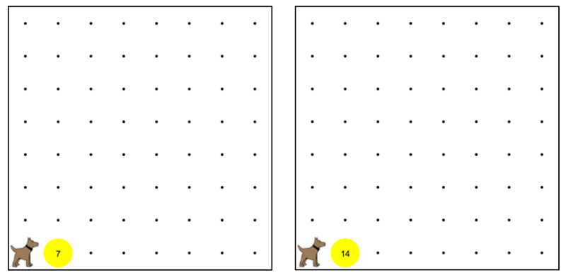

Karel starts at 1st street and 1st avenue next to a pile of tennis balls that will be at 1st street and 2nd avenue. Karel doesn't know how many balls there are, but Karel must double the number of tennis balls in that spot. For example, if there are 3 balls there at the beginning, there should be 6 there after running this program. 卡雷爾開始於第一街和第一大道旁邊一堆網球，將在第一街和第二大道的。 卡雷爾不知道多少個球也有，但卡雷爾必須加倍在現場的網球球的數量。例如， 如果有3個球有開頭，應該運行這個程序後，在6在那裡。
